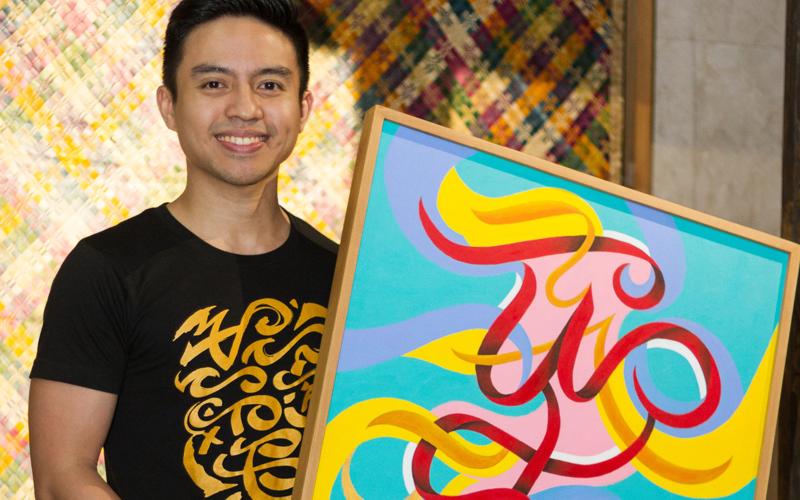

TAIPAN LUCERO
~ CalligraFilipino ~

ABOUT
TAIPAN LUCERO

A cum laude graduate of the University of the Philippines College of Fine Arts, Taipan Lucero started out as an independent creative industry professional, providing design and marketing services to a long list of clients that included Fortune 500 companies.
Eventually working as the only Filipino designer in a company in Kobe, Japan, he experienced first hand through practicing Japanese Calligraphy or Shodo, the immense love and respect the Japanese show their culture. Inspired by this, he quit his job and went back home to start CalligraFilipino.
CalligraFilipino, a portmanteau of Calligraphy and Filipino, is his art and advocacy that celebrates pre-colonial writing and traditional Filipino culture.
His works have been showcased locally and internationally, and has been constantly featured by mainstream outlets on print, radio, television, and new media, both here and abroad. As a supplement to his art, he conducts workshops and has spoken on multiple occasions in academic institutions as well as local and international conferences.
He aspires to be the first national artist for calligraphy.
ABOUT
~ CalligraFilipino ~

Each art piece is a significant word or concept
executed in my self-developed style of CalligraFilipino (Baybayin calligraphy),
influenced by elements of Filipino culture,
the Lingling-o fertility charm of the Ifugao,
the repeating tattoo patterns of the Pintados,
the colorful curvilinear Okir of the Maranao,
among others.